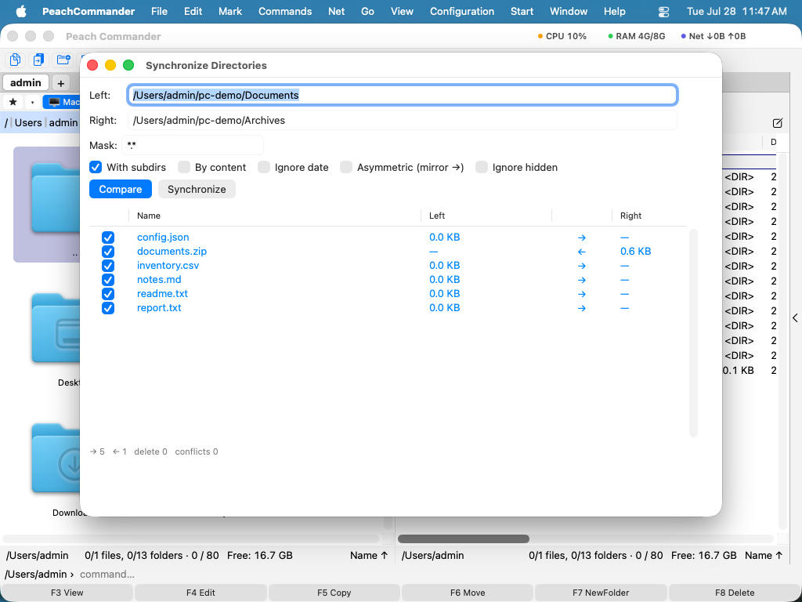

Sammenligning og synkronisering
Når du har to kopier af den samme mappe — en arbejdsmappe og en backup, en bærbar og et netværksdrev, et projekt og dets arkiv — hjælper Peach Commander dig med at se præcis, hvad der er ændret, og bringe de to sider i takt igen. Du kan synkronisere to mapper, sammenligne enkelte filer linje for linje og inspicere filer byte for byte, når du har brug for sikkerhed ned til det sidste tegn.
Synkronisér to mapper
- Åbn den mappe, du vil synkronisere, i venstre panel og den mappe, du vil sammenligne den med, i højre panel.
- Vælg Kommandoer ▸ Synkronisér mapper…. De to mappestier udfyldes fra dine paneler.
- Indstil, hvor grundig sammenligningen skal være: inkludér undermapper, sammenlign efter indhold (ikke kun efter dato og størrelse) eller ignorér ændringsdatoen.
- Tilføj en filtermaske (for eksempel
*.jpg;*.png), hvis du kun vil synkronisere bestemte filer. - Gennemgå resultatgitteret. Hver række viser en fil til venstre, en retningspil i midten og den matchende fil til højre. Pilene fortæller dig, hvad der vil ske: → kopierer fra venstre til højre, ← kopierer fra højre til venstre, og = betyder, at de to er identiske.
- Justér individuelle rækker, hvis du er uenig i en foreslået retning, og klik derefter på synkroniseringsknappen for at udføre ændringerne.

(Figur: Vinduet Synkronisér mapper sammenligner begge sider og foreslår en kopieringsretning for hver fil.)Sammenlign to filer efter indhold
- Markér én fil i hvert panel (eller to filer i samme panel).
- Vælg Fil ▸ Sammenlign efter indhold….
- De to filer åbner side om side med deres forskelle fremhævet. Brug kontrollerne næste/forrige til at springe mellem ændrede blokke.
- Hvis du slår redigeringstilstand til, kan du justere hver af filerne direkte og gemme dine ændringer.
 (Figur: Sammenligning af to tekstfiler; ændrede linjer er fremhævet på begge sider.)
(Figur: Sammenligning af to tekstfiler; ændrede linjer er fremhævet på begge sider.)
Sammenlign filer byte for byte
Når to filer ser ens ud, men du har brug for at bevise, at de virkelig er identiske (eller finde den ene byte, der afviger), skal du bruge den binære sammenligning. Den viser begge filer i en hex-visning med afvigende bytes markeret, hvilket er ideelt til at verificere overførsler, kontrollere kodede data eller bekræfte en nøjagtig kopi.
Sammenlign mappelister
For at få øje på forskelle mellem to åbne mapper med et enkelt blik skal du vælge Markér ▸ Sammenlign mapper (Shift+F2). Peach Commander markerer de filer, der afviger eller mangler på den anden side, så du kan handle på dem med de sædvanlige kommandoer til kopiering, flytning og sletning.
Genveje
| Handling | Genvej |
|---|---|
| Sammenlign mappelister (markér afvigende filer) | Shift+F2 |
| Sammenlign efter indhold | Fil ▸ Sammenlign efter indhold… |
| Synkronisér mapper | Kommandoer ▸ Synkronisér mapper… |
Bemærkninger
- Efter indhold vs. efter dato/størrelse. En hurtig sammenligning matcher filer efter størrelse og ændringsdato, hvilket er hurtigt, men kan narres, når tidsstempler afviger for identiske filer. Slå efter indhold til for et pålideligt resultat på bekostning af at læse hver fil.
- Undermapper og filtre. Synkroniseringsvinduet kan gå ned i undermapper og kan begrænses med en filtermaske, så du kun kan synkronisere de filtyper, du bekymrer dig om.
- Du bevarer kontrollen. Synkronisering kører aldrig af sig selv — du gennemgår de foreslåede retninger i resultatgitteret og kan ændre enhver af dem, før noget kopieres.
- Forudindstillinger. Ofte brugte synkroniseringsopsætninger kan gemmes og genbruges, så du ikke skal indtaste de samme indstillinger hver gang.